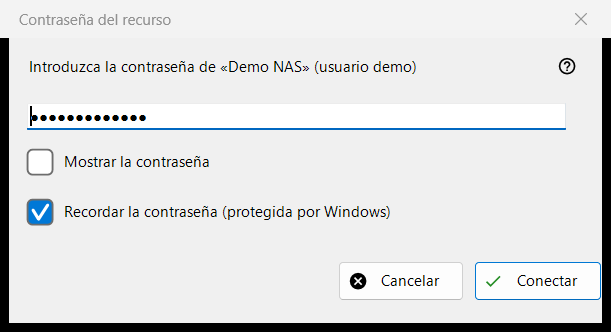
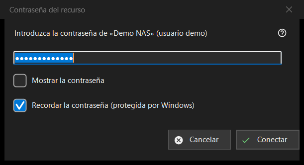

Contraseña del recurso
Para qué sirve
Pide la contraseña de un servidor o una carpeta de red guardados. Se abre cuando abre un recurso cuya contraseña no está guardada, cuando la guardada es rechazada, cuando una carpeta de destino en un servidor o una importación necesita la contraseña, y con el título «PIN del recurso» para una carpeta protegida con un PIN.


En este orden
- Escriba la contraseña; aparece oculta y «Mostrar la contraseña» la revela.
- Decida si deja activada «Recordar la contraseña (protegida por Windows)».
- Pulse «Conectar» (Intro) o «Cancelar» (Esc) para parar.
Los elementos
La contraseña
La petición nombra el recurso y el usuario. La contraseña se usa exactamente como se escribe, espacios incluidos. Un cuadro vacío da «Introduzca la contraseña». «Mostrar la contraseña» está desactivado al principio.
Recordar la contraseña
La casilla está activada de forma predeterminada. Si está activada, Windows guarda la contraseña cifrada para su cuenta, y solo después de que una conexión la haya confirmado; si no, se conserva en memoria solo durante la ejecución actual. La casilla se oculta donde la contraseña se guarda de todos modos, por ejemplo al importar un archivo de configuración, y en el modo PIN.
Una contraseña rechazada
Si el servidor rechazó la contraseña anterior, una línea dice «La contraseña no es válida. Introdúzcala de nuevo.» y la ventana vuelve a pedirla.
Modo PIN
Para una carpeta protegida con un PIN el título es «PIN del recurso» y la petición pide el PIN del recurso nombrado. No hay casilla para recordar, y un PIN rechazado da «El PIN se ha rechazado. Introdúcelo de nuevo.»